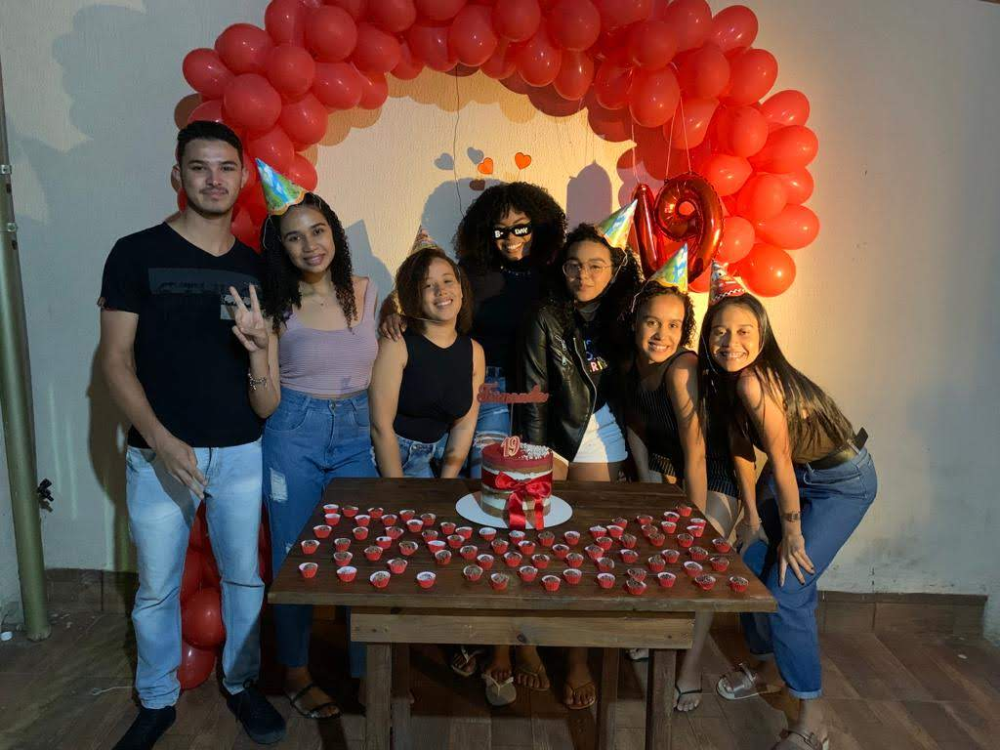
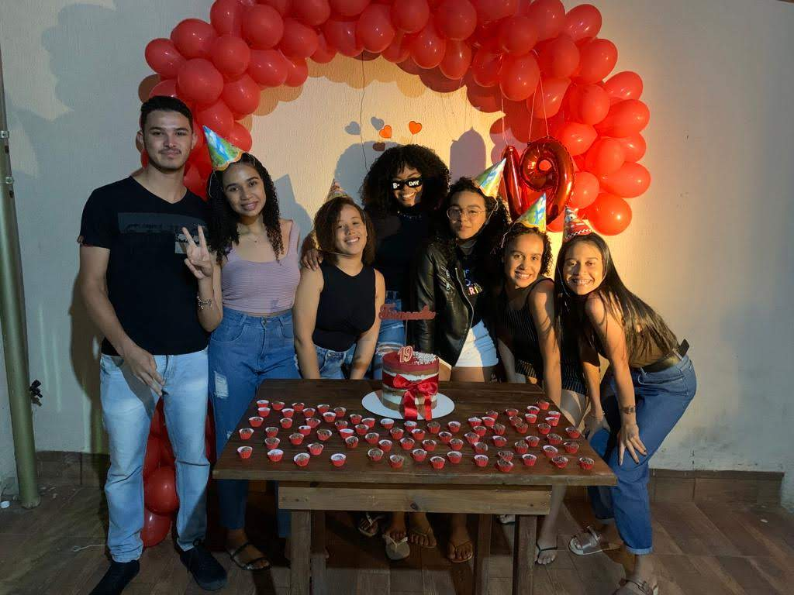
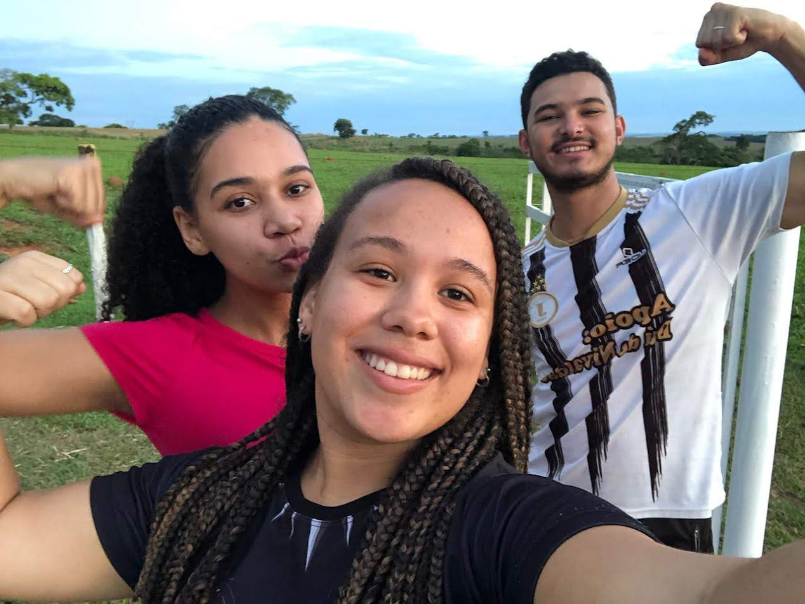
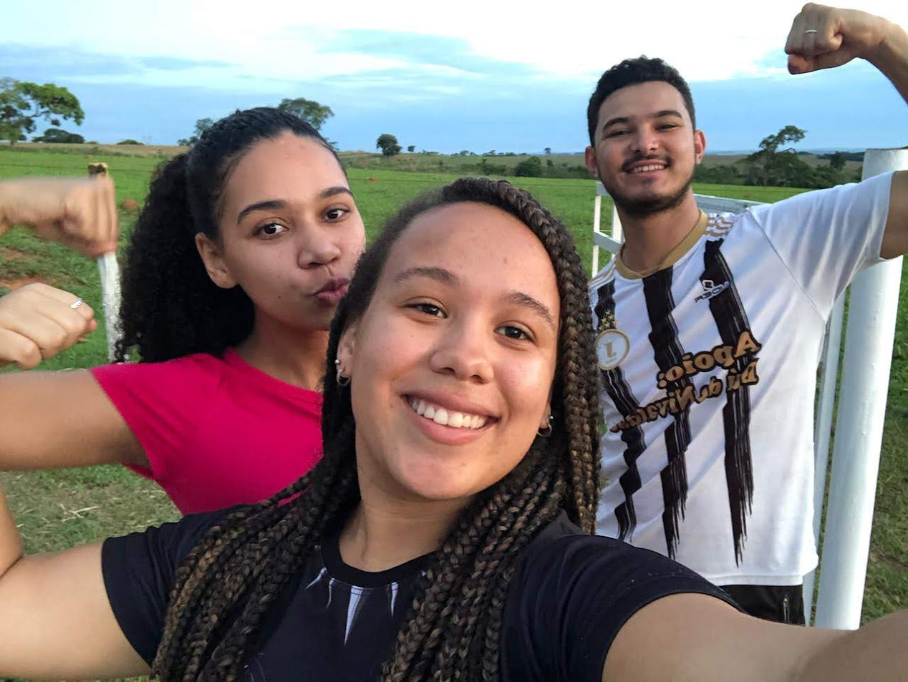
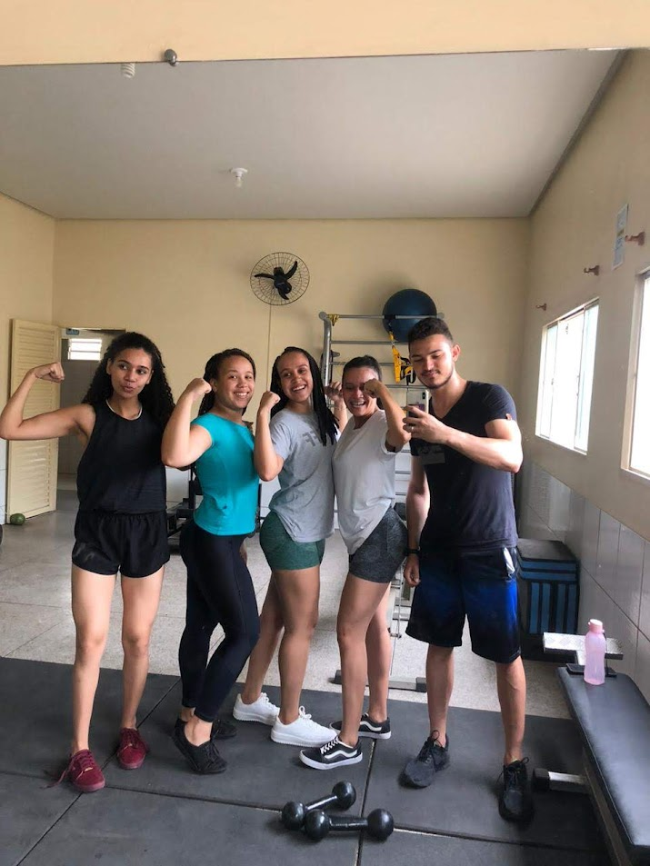
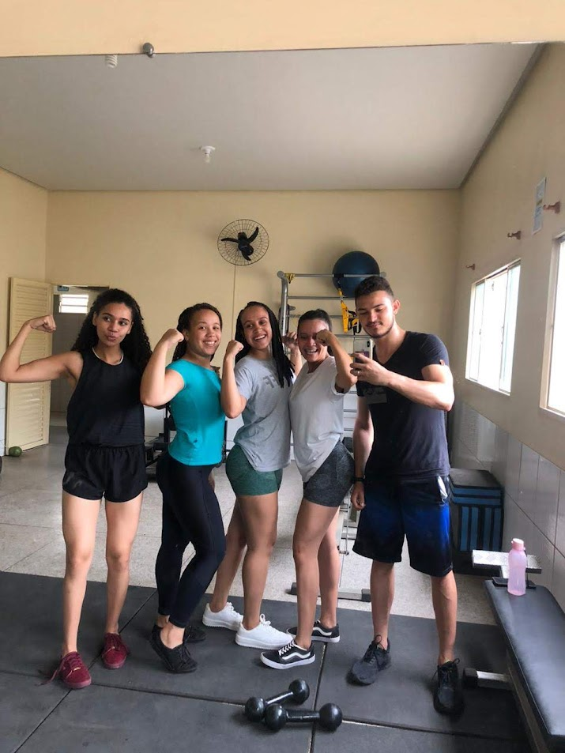

Allef
Tesouro é aquele tipo de figura que não tem como passar despercebido 😎
Tá sempre soltando uma piada, ajudando com alguma gambiarra ou inventando moda 🔧😂
E quando ele aparece, já sabe: vai ter risada, comida boa e história pra contar!
Amigo de infância, da época que a gente nem sabia escrever direito, mas já sabia zoar juntos 🤪
Crescemos lado a lado, quebrando brinquedo, rindo de bobagem e vivendo as melhores aventuras de UrutaÃ!
Com o Tesouro, tudo vira festa. Conserta as coisas da galera, cozinha como ninguém e ainda dá conselho (mesmo que ninguém peça) 😂
Um amigo que é bagunça, cuidado e parceria num combo só. Não tem outro igual 💙
Momentos com Tesouro 📸


 



 

 
